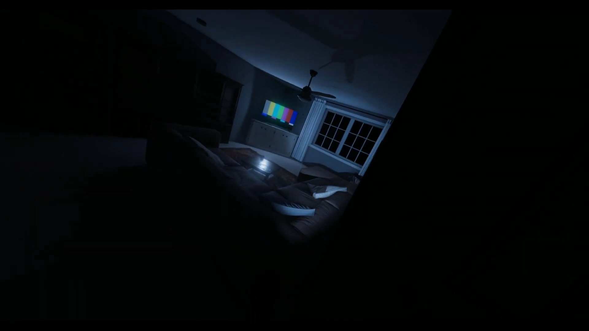

bas de page ↓

- Différent type de fantome
Banshee:
- Preuve: EMF Niveau 5, Emprinte et Température Glaciale.
- Force: Elle se concentrera sur un seul jouer à la foi jusqu'à ce qu'il le tue.
- Faiblesses:Craignent le crucifix qui aura une portée d'arrêt de 3 à 5 mètre pendant la chasse.
Démon:
- Preuve: Température Glaciale, Ecriture Fantomatique et Spirit Box.
- Force: Les Démons attaqueront plus souvent que tout autre fantôme.
- Faiblesses: Poser des question à un Démon sur une planche de Ouija ne réduira pas la santé mentale des utilisateurs.
Cauchemar:
- Preuve: Température Glaciale, Orbs Fantomatique et Spirit Box.
- Force: Les chances d'attaque augmente dans l'obscurité.
- Faiblesses:Allumer les lumières réduira ses chances d'attaquer.
- Comportement:Le Cauchemar est plus puissant dans l'obscurité donc il fera ce qu'il peut pour y parvenir comme éteundre les lumières ou la boîte de fusibles.
Oni:
- Preuve: EMF Niveau 5, Ecriture Fantomatique et Spirit Box.
- Force: Les Oni sont plus actifs lorsque les gens sont à proximité et ont été vus en mouvement à grande vitesse.
- Faiblesses: Etres actif rendra l'Oni plus facile à trouver et à identifier.
Phantom:
- Preuve: EMF Niveau 5, Température Glaciale et Orbs Fantomatique.
- Force: Regarder un fantôme diminuera considérablement votre santé mentale (manifestation visible, la chasse et apparition).
- Faiblesses: Prendre une photo du Phamtom le fera disparaître temporairement (n'arrête pas les chasses).
Yurei:
- Preuve: Température Glaciale, Orbs Fantomatique et Ecriture Fantomatique
- Force: Yurei est connu pour avoir un effet plus fort sur la santé mentale des gens.
- Faiblesses: Utiliser des bâtonnets sur la pièce du Yurei l'empêchera de se promener longtmeps dans les lieux.
Poltergeis:
- Preuve: Emprinte, Orbs Fantomatique et Spirit Box.
- Force: Un Poltergeist peut lancer d'énormes quantités d'objets à la fois .
- Faiblesses: Un Poltergeist est presque inefficace dans une pièce vide.
- Comportement: Le Poltergeist est capable d'influencer plus d'objets à la fois que n'importe quel autre fantôme et il est le seul a pouvoir ouvrir plusieur pore à la fois.
Revenant:
- Preuve: EMF Niveau 5, Emprinte et Ecriture Fantomatique.
- Force: Un Revenant voyagera à une vitesse beaucoup plus rapide lorsqu'il chassera une victime. De plus, le Revenant peut changer librement celui qu'il cible pendant une chasse.
- Faiblesses: Se cacher du Revenant le fera bouger très lentement.
Ombre:
- Preuve: >EMF Niveau 5,Orbs Fantomatique et Ecriture Fantomatique.
- Force: En tant que fantôme timide, un Shade effectuera rarement des actions en présence de deux personnes ou plus, ce qui le rendra plus difficile à détecter.
- Faiblesses: Un Shade démarre rarement une chasse lorsque les joueurs sont regroupés.
Esprit:
- Preuve: Emprinte, Ecriture Fantomatique et Spirit Box.
- Force: Rien.
- Faiblesses: Utiliser des bâtonnets sur un esprit l'empêchera d'attaquer pendant une longue période.
Spectre:
- Preuve: Emprinte, Température Glaciale et Spirit Box.
- Force: Les spectres ne touchent presque jamais le sol, ce qui signifie qu'ils ne peuvent pas être suivis par des pas.
- Faiblesses: Les spectres ont une réaction toxique au sel.
- Comportement: Le Spectre possède à la fois le pouvoir du vol et de l'intangibilité. Il peut traverser les murs et les portes sans les ouvrir et ne laissera pas de traces de pas sur le sol.
Si un Wraith entre en contact avec un tas de sel, il cessera immédiatement d'attaquer.
Retour en haut ↑ Retour choix fantomes